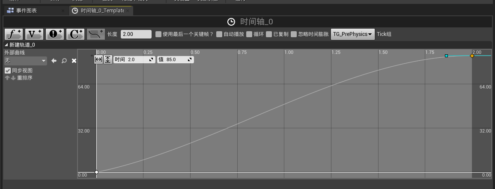
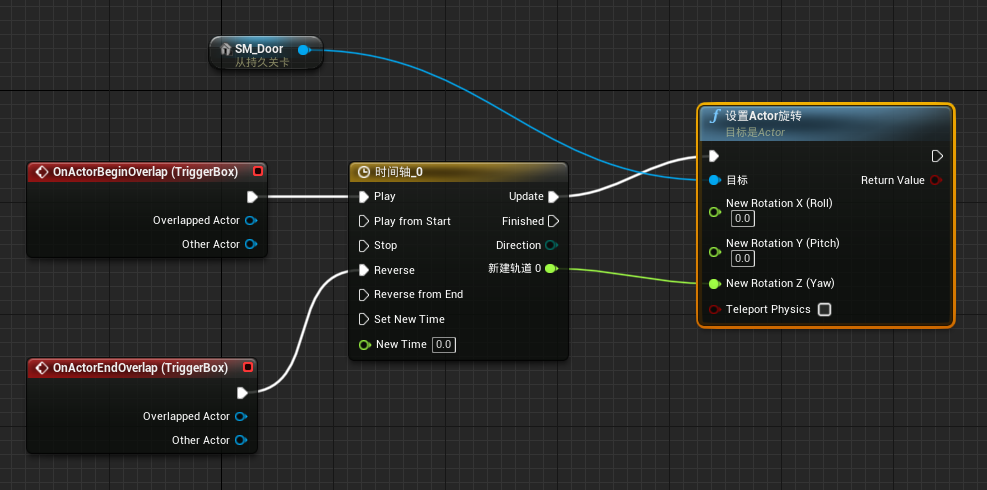
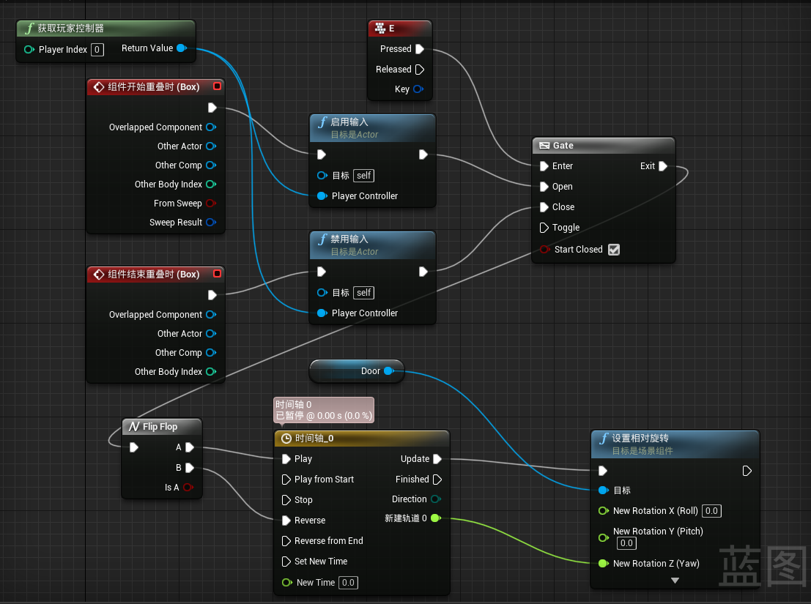

参考资料
蓝图类
通过关卡蓝图来开关门


思路
- 进入触发器时控制Door这个静态网格体相对旋转，通过时间轴制造一个开门动画。
- 时间轴从（0，0）到（0，85），第一个值为秒数，第二个值为图中新建轨道0的输出值。
通过自定义蓝图类来实现按键E开关门

思路
- 当玩家进入控制器时，触发启动输入；离开控制器，禁用输入
- 当启动输入后，通过按下E键，控制Gate
- Flip Flop组件为每一次走流程都走与上一次相反的路径，通过每次按E键都有与上一次不同的效果（按一次E开门，再按一次关门）